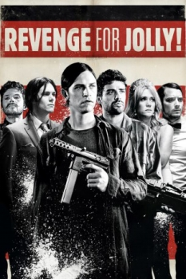

A Vingança (2012)


Dog's best friend, man's worst enemy.

Avaliação (TMDb):


4.7/10 (29 votos)
Avaliação (Usuário):
Outro Título:Revenge for Jolly! (Título Original)
País:United States, 84 minutos
Idiomas falados:Inglês, Português
Gênero(s):Comédia, Drama
Diretor(s):Chadd Harbold
Codec:MPEG-2 (DVD)
Número: 428
Sinopse:
Harry (Brian Petsos) é completamente obcecado por Jolly, sua cadela. Um dia, quando o animal é morto, ele pede a seu primo Cecil (Oscar Isaac) para ajudá-lo a encontrar o responsável.
Elenco:
Brian Petsos, Kristen Wiig, Elijah Wood, Oscar Isaac, Adam Brody, Ryan Phillippe, Garret Dillahunt, Amy Seimetz, Kevin Corrigan, David Rasche
Tipo de mídia: DVD5,
Legendas: Português
Alugado: Não
Tela: 2.35:1